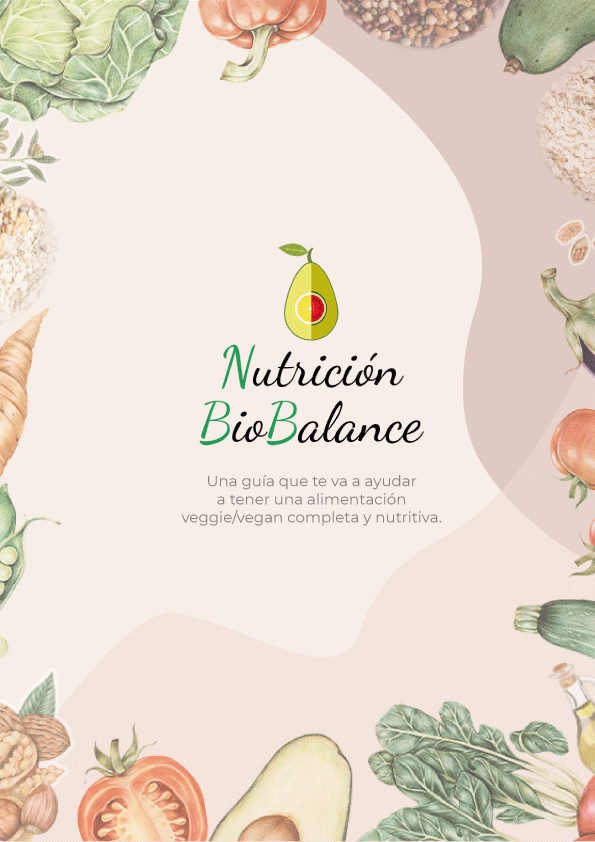

Nutrición plant based
Descubrí el balance entre cuidar tu cuerpo y nutrirlo a través de una alimentación plant based de manera fácil, intuitiva y consciente conectando con el autoconocimiento que nos guía a una mejor versión de nosotrxs.
Sobre mi
Mi nombre es Agus, soy mamá de Sia, vivo con mi novio Juan y mis dos perros adoptados Bostón y África. Soy muy familiera. Creo en el poder del universo y mi libro de cabecera es El Secreto. En casa no comemos animales, es una filosofía de vida que elegimos.
Soy Licenciada en Nutrición y amo mi trabajo.
Cuando me recibí ya llevaba una alimentación basada en plantas y una cabeza curiosa de querer atender a mis futuros consultantes de una forma integral. Empezó mi búsqueda.
Conocí a Vanina Repun, eternamente agradecida, mi gurú, así le digo, fue quien me abrió el camino a descubrir hacia donde quería orientar mi carrera.
Con ella hice dos diplomaturas en alimentación plant based, una de ellas con enfoque a la atención de patologías de una forma integral y holística.
También hice un posgrado en pediatría, embarazo y lactancia plant based. Cursos de ayurveda, de medicina china y alimentación biointegral (en curso).
Y encontré mi rumbo.
Mi carrera, mi forma de vivir, y mis sentimientos estaban alineados con mi forma de atender a mis consultantes.
Considerando su cuerpo físico - mental - espiritual.
Surgió mi espacio BioBalance.
Hice la carrera de estética corporal, porque quería trabajar con productos naturales, basados en plantas y sumar a mi espacio este plus.
Conocí a la maravillosa Gabriela Koon. Quien es cosmetóloga y esteticista y lleva ella toda la parte de piel y sus cuidados con productos naturales.
Creció BioBalance, crecí y no deje de capacitarme, mediante talleres, cursos, posgrados.
Se sumó a mi espacio un equipo de mujeres nutricionistas con quienes compartimos la filosofía de vida y trabajo.
Aportando también conocimiento sobre memoria celular, terapia con oligoelementos, especialización en ayurveda, desequilibrios en la alimentación, y más.
Hoy somos un equipo de mujeres con una mirada holística y abriéndose caminos. Trabajando para otras mujeres que buscan aprender sobre una alimentación plant based, completa y nutritiva. Alineada a sus emociones.
Gracias a mi equipo y mis consultantes me motivan y enseñan día a día a ser mejor persona y profesional.
Bienvenidos/as a BioBalance Alimentación y Estética a base de plantas y consciente.
Nuestro equipo
Nutricionistas especialistas plant based y Cosmetologa. Esteticista plant based y convencional.

E-books
Guia BioBalance - Qué nutrientes deben estar en una alimentación plant based. ¿En qué alimentos los encuentro?
Obtener e-bookMis E-books son para vos si...
Te agota pensar qué platos cocinar y que, además, cumplan con tus necesidades nutricionales.
Querés incorporar comidas más nutritivas a tu alimentación, de forma simple y consciente. Querés sumar más plantas (alimentos de origen vegetal), bajar el consumo de procesados, lácteos y carnes.
Querés disfrutar de todos los beneficios que los alimentos naturales tienen para vos, pero no sabes bien como ni por donde empezar.
Estética y cosmética natural
COSMÉTICA BASADA EN PLANTAS, QUE BUSCA ACERCAR SUS BENEFICIOS AL BIENESTAR DIARIO VALORAMOS LO SIMPLE Y LA BELLEZA DE LOS PEQUEÑOS ACTOS COTIDIANOS.
Para acompañar los momentos de autocuidado seleccionamos materias primas de origen botánico y aromas naturales, no hacemos testeos en animales. Nos propusimos ofrecer cosmética natural con una experiencia confortable para quienes eligen nuestros productos.
Hablemos!
Te esperamos en BioBalance con mi hermoso equipo para ense√±arte y acompa√±arte a mejorar tus hábitos alimentarios y aprender sobre una alimentaci√≥n plant based üå±
Consultorio: Villa Urquiza.
üì© biobalance.nutricion@gmail.com
üì≤ Turnos y consultas online y presencial: Ir a whatsapp